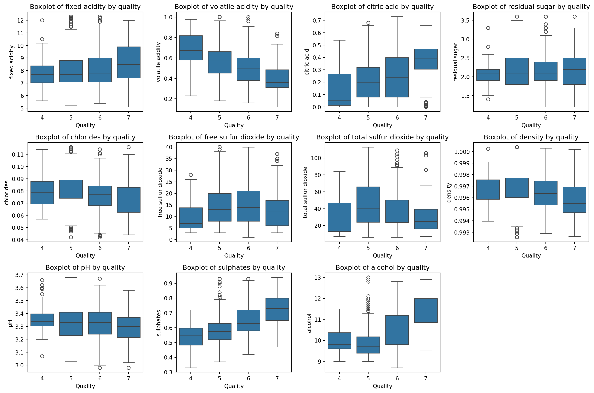

Proportional Odds Model for Ordinal Logistic Regression
Assessing Proportionality in the Proportional Odds Model for Ordinal Logistic Regression using python
Author
Jumbong Junior
Published
June 10, 2025
The proportional odds model for ordinal logistic regression was first introduced by McCullagh (1980). This model extends binary logistic regression to situations where the dependent variable is ordinal—that is, it consists of ordered categorical values. The proportional odds model is built on several assumptions, including independence of observations, linearity of the log-odds, absence of multicollinearity among predictors, and, most importantly, the proportional odds assumption. This last assumption states that the regression coefficients are constant across all thresholds of the ordinal dependent variable. Ensuring the proportional odds assumption holds is crucial for the validity and interpretability of the model.
A variety of methods have been proposed in the literature to assess model fit and, in particular, to test the proportional odds assumption. In this paper, we focus on two approaches developed by Brant in his article Brant (1990), “Assessing Proportionality in the Proportional Odds Model for Ordinal Logistic Regression.” We also demonstrate how to implement these techniques in Python, applying them to real-world data. Whether you come from a background in data science, machine learning, or statistics, this article aims to help your understand how to evaluate model fit in ordinal logistic regression.
This paper is organized into four main sections:
The first section introduces the proportional odds model and its assumptions.
The second section discusses how to assess the proportional odds assumption using the likelihood ratio test.
The third section covers the assessment of the proportional odds assumption using the separate fits approach.
The final section provides examples, illustrating the implementation of these assessment methods in Python with data.
Introduction to the Proportional Odds Model
Before presenting the model, we introduce the data structure. We assume we have \(N\) independent observations. Each observation is represented by a vector of \(p\) explanatory variables \(X_i = (X_{i1}, X_{i2}, \ldots, X_{ip})\), along with a dependent or response variable \(Y\) that takes ordinal values from \(1\) to \(K\). The proportional odds model specifically models the cumulative distribution probabilities of the response variable \(Y\), defined as \(\gamma_j = P(Y \leq j \mid X_i)\) for \(j = 1, 2, \dots, K-1\), as functions of the explanatory variables \(X_i\). The model is formulated as follows:
Where \(\theta_j\) are the intercepts for each category j and respect the condition \(\theta_1 < \theta_2 < ... < \theta_{K-1}\), and \(\beta\) is the vector of regression coefficients which are the same for all categories. We observe a monotonic trend in the coefficients \(\theta_j\) across the categories of the response variable Y.
This model is also known as the grouped continuous model, as it can be derived by assuming the existence of a continuous latent variable \(Y^*\). This latent variable follows a linear regression model with conditional mean \(\eta = \boldsymbol{\beta}^{\top} \mathbf{X}\), and it relates to the observed ordinal variable \(Y\) through thresholds \(\theta_j\) defined as follows: \[
y^* = {\beta}^{T}\mathbf{X} + \epsilon
\tag{2}\]
where \(\epsilon\) is an error term (random noise), generally assumed to follow a standard logistic distribution in the proportional odds model.
The latent variable \(Y^*\) is unobserved and partitioned into intervals defined by thresholds \(\theta_1, \theta_2, \dots, \theta_{K-1}\), generating the observed ordinal variable \(Y\) as follows:
In the next section, we introduce the various approaches proposed by Brant (1990) for assessing the proportional odds assumption. These methods evaluate whether the regression coefficients remain constant across the categories defined by the ordinal response variable.
Assessing the Proportional Odds Assumption: The Likelihood Ratio Test
To assess the proportional odds assumption in an ordinal logistic regression model, Brant (1990) proposes the use of the likelihood ratio test. This approach begins by fitting a less restrictive model in which the regression coefficients are allowed to vary across categories. This model is expressed as: \[
\text{logit}(\gamma_j) = \theta_j - \beta_j^\top \mathbf{X}
\tag{4}\]
where \(\beta_j\) is the vector of regression coefficients for each category j. Here the coefficients \(\beta_j\) are allowed to vary across categories, which means that the proportional odds assumption is not satisfied. We then use the conventionnel likelihood ratio test to assess the hypothesis : \[
H_0: \beta_j = \beta \quad \text{for all } j = 1, 2, \ldots, K-1
\tag{5}\]
To perform this test, we conduct a likelihood ratio test comparing the unconstrained (non-proportional or satured) model with the constrained (proportional odds or reduced) model.
Before proceeding further, we briefly recall how to use the likelihood ratio test in hypothesis testing. Suppose we want to evaluate the null hypothesis \(H_0 : \theta \in \Theta_0\) against the alternative \(H_1 : \theta \in \Theta_1\),
The likelihood ratio statistic is defined as: \[
\lambda = 2 \log\left(\frac{\displaystyle\sup_{\theta \in \Theta}\mathcal{L}(\theta)}{\displaystyle\sup_{\theta \in \Theta_0}\mathcal{L}(\theta)}\right)
= 2\log\left(\frac{\mathcal{L}(\hat{\theta})}{\mathcal{L}(\hat{\theta}_0)}\right),
\tag{6}\]
where \(\mathcal{L}(\theta)\) is the likelihood function, \(\hat{\theta}\) is the maximum likelihood estimate (MLE) under the full model, and \(\hat{\theta}_0\) is the MLE under the constrained model. The test statistic \(\lambda\) follows a chi-square distribution with degrees of freedom equal to the difference in the number of parameters between the full and constrained models.
Here, \(\hat{\theta}\) is the maximum likelihood estimate (MLE) under the full (unconstrained) model, and \(\hat{\theta}_0\) is the MLE under the constrained model where the proportional odds assumption holds. The test statistic \(\lambda\) follows a chi-square distribution under the null hypothesis.
In a general setting, suppose the full parameter space is denoted by
(Note: These parameters are generic and should not be confused with the \(K - 1\) thresholds or intercepts in the proportional odds model.), the likelihood ratio test statistic \(\lambda\) follows a chi-square distribution with \(p - q\) degrees of freedom. Where \(p\) represents the total number of parameters in the full (unconstrained or “saturated”) model, while \(K - 1\) corresponds to the number of parameters in the reduced (restricted) model.
Now, let us apply this approach to the ordinal logistic regression model with the proportional odds assumption. Assume that our response variable has \(K\) ordered categories and that we have \(p\) predictor variables. To use the likelihood ratio test to evaluate the proportional odds assumption, we need to compare two models:
1. Unconstrained Model (non-proportional odds):
This model allows each outcome threshold to have its own set of regression coefficients, meaning that we do not assume the regression coefficients are equal across all thresholds. The model is defined as:
This test provides a formal way to assess whether the proportional odds assumption holds for the given data. At a significance level of 1%, 5%, or any other conventional threshold, the proportional odds assumption is rejected if the test statistic \(\lambda\) exceeds the critical value from the chi-square distribution with \((K - 2) \times p\) degrees of freedom.
which states that the regression coefficients are equal across all cumulative logits. This test has the advantage of being straightforward to implement and provides an overall assessment of the proportional odds assumption.
In the next section, we introduce the proportional odds test based on separate fits.
Assessing the Proportional Odds Assumption: The Separate Fits Approach
To understand this part, you must understand the Mahalanobis distance and its properties. The Mahalanobis distance can be used to measure the dissimilarity between two vectors \(x=(x_1, x_2, \ldots, x_p)^\top\) and \(y=(y_1, y_2, \ldots, y_p)^\top\) in a multivariate space with the same distribution. It is defined as: \[
D_M(x, y) = \sqrt{(x - y)^\top \Sigma^{-1} (x - y)}
\tag{8}\]
where \(\Sigma\) is the covariance matrix of the distribution. The Mahalanobis distance is linked with the \(\chi^2\) distribution, specifically, if \(X \sim N(\mu, \Sigma)\) is a p-dimensional normal random vector, with the mean \(\mu\) and covariance matrix \(\Sigma\), then the Mahalanobis distance \(D_M(X, \mu)\) follows a \(\chi^2\) distribution with \(p\) degrees of freedom. This step is essential for understanding how to assess proportionality using separate fits. You will see why shortly.
In fact, the author notes that the natural approach to evaluating the proportional odds assumption is to fit a set of \(K-1\) binary logistic regression models (where \(K\) is the number of categories of the response variable), and then use the statistical properties of the estimated parameters to construct a test statistic for the proportional odds hypothesis.
The procedure is as follows:
First, we construct separate binary logistic regression models for each threshold \(j = 1, 2, \ldots, K-1\) of the ordinal response variable \(Y\). For each threshold \(j\), we define a binary variable \(Z_j\), which takes the value 1 if the observation exceeds threshold \(j\), and 0 otherwise. Specifically, we have: \[
Z_j = \begin{cases}
0 & \text{if } Y > j \\
0 & \text{if } Y \leq j
\end{cases}
\tag{9}\]
With the probaility, \(\pi_j = P(Z_j = 1 \mid \mathbf{X}) = 1 - \gamma_j\) satisfying the logistic regression model: \[
\text{logit}(\pi_j) = \theta_j - \beta_j^\top \mathbf{X}.
\tag{10}\]
Then, assessing the proportional odds assumption in this context involves testing the hypothesis that the regression coefficients \(\beta_j\) are equal across all \(K-1\) models. This is equivalent to testing the hypothesis:
Let \(\hat{\beta}_j\) denote the maximum likelihood estimators of the regression coefficients for each binary model, and let \(\hat{\beta} = (\hat{\beta}_1^\top, \hat{\beta}_2^\top, \ldots, \hat{\beta}_{K-1}^\top)^\top\) represent the global vector of estimators. This vector is asymptotically normally distributed, such that \(\mathbb{E}(\hat{\beta}_j) \approx \beta\), with variance-covariance matrix \(\mathbb{V}(\hat{\beta}_j)\). The general term of this matrix, \(\text{cov}(\hat{\beta}_j, \hat{\beta}_k)\), needs to be determined and is given by:
where \(\text{Cov}(\hat{\boldsymbol{\beta}}_j, \hat{\boldsymbol{\beta}}_k)\) is the covariance between the estimated coefficients of the \(j\)-th and \(k\)-th binary models. To evaluate the proportional odds assumption, Brant constructs a matrix \(\mathbf{D}\) that captures the differences between the coefficients \(\hat{\beta}_j\). Recall that each vector \(\hat{\beta}_j\) has dimension \(p\). The matrix \(\mathbf{D}\) is defined as follows:
where \(I\) is the identity matrix of size \(p \times p\). The first row of the matrix D corresponds to the difference between the first and second coefficients, the second row corresponds to the difference between the second and third coefficients, and so on, until the last row which corresponds to the difference between the \((K-2)\)-th and \((K-1)\)-th coefficients. We can notice that the product \(\mathbf{D} \hat{{\beta}}\) will yield a vector of differences between the coefficients \(\hat{\beta_j}\).
Once the matrix \(\mathbf{D}\) is constructed, Brant defines the Wald statistic \(X^2\) to test the proportional odds assumption. This statistic can be interpreted as the Mahalanobis distance between the vector \(\mathbf{D} \hat{\boldsymbol{\beta}}\) and the zero vector. The Wald statistic is defined as follows:
which will be asymptotically \(\chi^2\) distributed with \((K - 2)p\) degrees of freedom under the null hypothesis. The challenging part here is to determine the variance-covariance matrix \(\widehat{V}(\hat{\beta})\). In his article, Brant provides an explicit estimator for this variance-covariance matrix, which is based on the maximum likelihood estimators \(\hat{\beta}_j\) from each binary model.
In the following sections, we implement these approaches in Python, using the statsmodels package for the regressions and statistical tests.
Example
The data for this example comes from the “Wine Quality” dataset, which contains information about red wine samples and their quality ratings. The dataset includes 1,599 observations and 12 variables. The target variable, “quality,” is ordinal and originally ranges from 3 to 8. To ensure enough observations in each group, we combine categories 3 and 4 into a single category (labeled 4), and categories 7 and 8 into a single category (labeled 7), so the response variable has four levels. We then handle outliers in the explanatory variables using the Interquartile Range (IQR) method. Finally, we select three predictors—volatile acidity, free sulfur dioxide, and total sulfur dioxide—to use in our ordinal logistic regression model, and we standardize these variables to have a mean of 0 and a standard deviation of 1.
Tables 1 and 2 present the results of the three binary logistic regression models and the proportional odds model, respectively. Several discrepancies can be seen in these tables, particularly in the “volatile acidity” coefficients. For instance, the difference in the “volatile acidity” coefficient between the first and second binary models is -0.280, while the difference between the second and third models is 0.361. These differences—especially when compared alongside the standard errors—suggest that the proportional odds assumption may not hold.
To assess the overall significance of the proportional odds assumption, we perform the likelihood ratio test, which yields a test statistic of \(\mathrm{LR} = 53.207\) and a p-value of \(1.066 \times 10^{-9}\) when compared to the chi-square distribution with 6 degrees of freedom. This result indicates that the proportional odds assumption is violated at the 5% significance level, suggesting that the model may not be appropriate for the data. We also use the separate fits approach to further investigate this assumption. The Wald test statistic is computed as \(X^2 = 41.880\), with a p-value of \(1.232 \times 10^{-7}\), also based on the chi-square distribution with 6 degrees of freedom. This further confirms that the proportional odds assumption is violated at the 5% significance level.
Conclusion
This paper had two main goals: first, to illustrate how to test the proportional odds assumption in the context of ordinal logistic regression, and second, to encourage readers to explore Brant (1990)’s article for a deeper understanding of the topic.
Brant’s work extends beyond assessing the proportional odds assumption—it also provides methods for evaluating the overall adequacy of the ordinal logistic regression model. For instance, he discusses how to test whether the latent variable \(Y^*\) truly follows a logistic distribution or whether an alternative link function might be more appropriate.
In this article, we focused on a global assessment of the proportional odds assumption, without investigating which specific coefficients may be responsible for any violations. Brant also addresses this finer-grained analysis, which is why we strongly encourage you to read his 1990 article in full.
We welcome any comments or suggestions. Happy reading!
import pandas as pddata = pd.read_csv("winequality-red.csv", sep=";")data.head()# Repartition de la variable cible quality data['quality'].value_counts(normalize=False).sort_index()# I want to regroup modalities 3, 4 and the modalities 7 and 8data['quality'] = data['quality'].replace({3: 4, 8: 7})data['quality'].value_counts(normalize=False).sort_index()print("Number of observations:", data.shape[0])
Number of observations: 1599
# Traitons les outliers des variables privées de la variable cible quality par IQR.def remove_outliers_iqr(df, column): Q1 = df[column].quantile(0.25) Q3 = df[column].quantile(0.75) IQR = Q3 - Q1 lower_bound = Q1 -1.5* IQR upper_bound = Q3 +1.5* IQRreturn df[(df[column] >= lower_bound) & (df[column] <= upper_bound)]for col in data.columns:if col !='quality': data = remove_outliers_iqr(data, col)
var_names_without_quality = [col for col in data.columns if col !='quality']## Create the boxplot of each variable per group of qualityimport matplotlib.pyplot as pltimport seaborn as snsplt.figure(figsize=(15, 10))for i, var inenumerate(var_names_without_quality): plt.subplot(3, 4, i +1) sns.boxplot(x='quality', y=var, data=data) plt.title(f'Boxplot of {var} by quality') plt.xlabel('Quality') plt.ylabel(var)plt.tight_layout()plt.show()

# Implement the ordered logistic regression to variables 'volatile acidity', 'free sulfur dioxide', and 'total sulfur dioxide'from statsmodels.miscmodels.ordinal_model import OrderedModelfrom sklearn.preprocessing import StandardScalerexplanatory_vars = ['volatile acidity', 'free sulfur dioxide', 'total sulfur dioxide']# Standardize the explanatory variablesdata[explanatory_vars] = StandardScaler().fit_transform(data[explanatory_vars])def fit_ordered_logistic_regression(data, response_var, explanatory_vars): model = OrderedModel( data[response_var], data[explanatory_vars], distr='logit' ) result = model.fit(method='bfgs', disp=False)return resultresponse_var ='quality'result = fit_ordered_logistic_regression(data, response_var, explanatory_vars)print(result.summary())# Compute the log-likelihood of the modellog_reduced = result.llfprint(f"Log-likelihood of the reduced model: {log_reduced}")
num_of_thresholds =len(result.params) -len(explanatory_vars) # Number of thresholds is total params minus explanatory varsOrderedModel( data[response_var], data[explanatory_vars], distr='logit' ).transform_threshold_params(result.params[-num_of_thresholds:])
# The likelihood ratio test# Compute the full multinomial modelimport statsmodels.api as smdata_sm = sm.add_constant(data[explanatory_vars])model_full = sm.MNLogit(data[response_var], data_sm)result_full = model_full.fit(method='bfgs', disp=False)#summaryprint(result_full.summary())# Commpute the log-likelihood of the full modellog_full = result_full.llfprint(f"Log-likelihood of the full model: {log_full}")# Compute the likelihood ratio statisticLR_statistic =2* (log_full - log_reduced)print(f"Likelihood Ratio Statistic: {LR_statistic}")# Compute the degrees of freedomdf1 = (num_of_thresholds -1) *len(explanatory_vars)df2 = result_full.df_model - OrderedModel( data[response_var], data[explanatory_vars], distr='logit' ).fit().df_modelprint(f"Degrees of Freedom: {df1}")print(f"Degrees of Freedom for the full model: {df2}")# Compute the p-valuefrom scipy.stats import chi2print("The LR statistic :", LR_statistic)p_value = chi2.sf(LR_statistic, df1)print(f"P-value: {p_value}")if p_value <0.05:print("Reject the null hypothesis: The proportional odds assumption is violated.")else:print("Fail to reject the null hypothesis: The proportional odds assumption holds.")
/Users/juniorjumbong/Desktop/personal-website/.venv/lib/python3.13/site-packages/statsmodels/base/model.py:607: ConvergenceWarning:
Maximum Likelihood optimization failed to converge. Check mle_retvals
/Users/juniorjumbong/Desktop/personal-website/.venv/lib/python3.13/site-packages/statsmodels/base/optimizer.py:737: RuntimeWarning:
Maximum number of iterations has been exceeded.
/Users/juniorjumbong/Desktop/personal-website/.venv/lib/python3.13/site-packages/statsmodels/base/model.py:607: ConvergenceWarning:
Maximum Likelihood optimization failed to converge. Check mle_retvals
import numpy as npimport statsmodels.api as smimport pandas as pddef fit_binary_models(data, explanatory_vars, y):""" - data : DataFrame pandas original (doit contenir toutes les variables) - explanatory_vars : liste des variables explicatives - y : array-like, cible ordinale (n,) (ex: 4, 5, 6, 7) Retourne : - binary_models : liste d'objets Logit results (statsmodels) - beta_hat : array (K-1, p+1) (coeffs incluant l'intercept) - var_hat : liste de matrices (p+1, p+1) (variance-covariance complète) - z_mat : DataFrame des variables binaires z_j (pour debug/inspection) - thresholds : liste des seuils utilisés """ qualities = np.sort(np.unique(y)) # toutes les modalités, triées thresholds = qualities[:-1] # seuils pour les modèles binaires (K-1) p =len(explanatory_vars) n =len(y) K_1 =len(thresholds) binary_models = [] beta_hat = np.full((K_1, p+1), np.nan) p_values_beta_hat = np.full((K_1, p+1), np.nan) # pour les p-values var_hat = [] z_mat = pd.DataFrame(index=np.arange(n)) X_with_const = sm.add_constant(data[explanatory_vars])# Construction et estimation des modèles binaires pour chaque seuilfor j, t inenumerate(thresholds): z_j = (y > t).astype(int) z_mat[f'z>{t}'] = z_j model = sm.Logit(z_j, X_with_const) res = model.fit(disp=0) binary_models.append(res) beta_hat[j, :] = res.params.values # Incluant intercept p_values_beta_hat[j, :] = res.pvalues.values # P-values des coefficients var_hat.append(res.cov_params().values) # Covariance complète (p+1, p+1)return binary_models, beta_hat, X_with_const, var_hat, z_mat, thresholdsbinary_models, beta_hat,X_with_const, var_hat, z_mat, thresholds = fit_binary_models(data, explanatory_vars, data[response_var])# Afficher les coefficients estimésprint("Estimated coefficients (beta_hat):")print(beta_hat)# Afficher les p-values des coefficientsprint("P-values of coefficients (p_values_beta_hat):")print(X_with_const)# Afficher les seuilsprint("Thresholds:")print(thresholds) print("z_mat (variables binaires créées) :\n", z_mat.head())
def fill_varBeta_diagonal(varBeta, var_hat): K_1 =len(var_hat) p = var_hat[0].shape[0] -1# -1 car on enlève l'interceptfor m inrange(K_1): block = var_hat[m][1:, 1:] # enlève intercept row_start = m * p row_end = (m +1) * p varBeta[row_start:row_end, row_start:row_end] = blockreturn varBeta# betaStar : concaténation des coefficients sans interceptbetaStar = beta_hat[:, 1:].flatten()# Compléter les blocs diagonaux de varBetavarBeta = fill_varBeta_diagonal(varBeta, var_hat)print("Shape de varBeta après remplissage diagonal :", varBeta.shape) # ((K-1)*p, (K-1)*p)print("Aperçu de varBeta après remplissage diagonal :\n", varBeta[:5, :5]) # Afficher un aperçu
import numpy as npdef construct_D(K_1, p):""" Construit la matrice D de taille ((K-2)*p, (K-1)*p) pour le test de Wald. K_1 : nombre de seuils (K-1) p : nombre de variables explicatives (hors intercept) """ D = np.zeros(((K_1-1)*p, K_1*p)) I = np.eye(p)for i inrange(K_1-1): # i = 0 à K-2for j inrange(K_1):if j ==0: temp = Ielif j == i+1: temp =-Ielse: temp = np.zeros((p, p)) col_start = j*p col_end = (j+1)*p row_start = i*p row_end = (i+1)*p D[row_start:row_end, col_start:col_end] += tempreturn DD = construct_D(len(thresholds), len(explanatory_vars))print("Shape de D :", D.shape) # ((K-2)*p, (K-1)*p)print("Aperçu de D :\n", D[:5, :5]) # Afficher un aperçu
Shape de D : (6, 9)
Aperçu de D :
[[ 1. 0. 0. -1. 0.]
[ 0. 1. 0. 0. -1.]
[ 0. 0. 1. 0. 0.]
[ 1. 0. 0. 0. 0.]
[ 0. 1. 0. 0. 0.]]
def wald_statistic(D, betaStar, varBeta):""" Calcule la statistique de Wald X^2 pour le test de proportionnalité. """ Db = D @ betaStar V = D @ varBeta @ D.T# Symétriser V pour stabilité#V = 0.5 * (V + V.T)# Utilise le pseudo-inverse par sécurité numérique inv_V = np.linalg.inv(V) X2 =float(Db.T @ inv_V @ Db)return X2
# Supposons que tu as K_1, p, betaStar, varBetaK_1 =len(binary_models)p =len(explanatory_vars) # Nombre de variables explicatives (hors intercept)D = construct_D(K_1, p)X2 = wald_statistic(D, betaStar, varBeta)ddl = (K_1-1)*pfrom scipy.stats import chi2pval =1- chi2.cdf(X2, ddl)print(f"Statistique X² = {X2:.4f}")print(f"Degrés de liberté = {ddl}")print(f"p-value = {pval:.4g}")